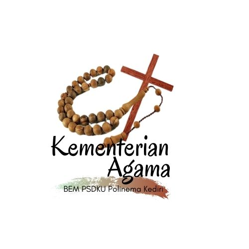
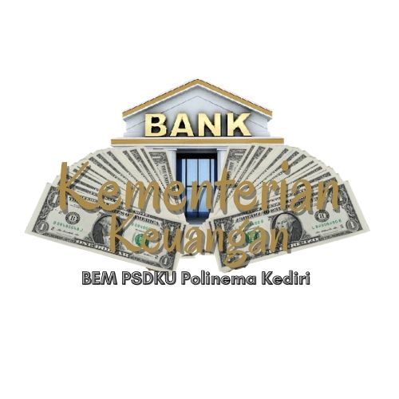
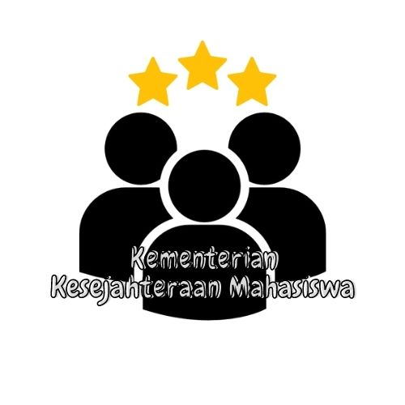
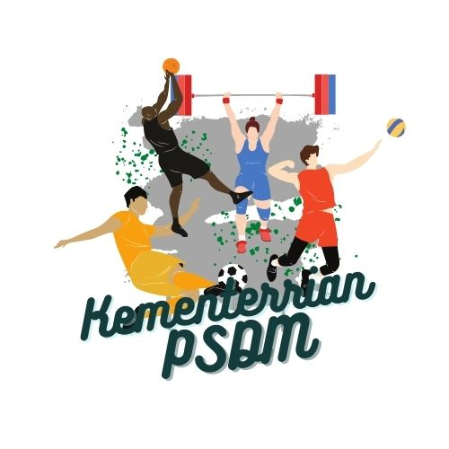
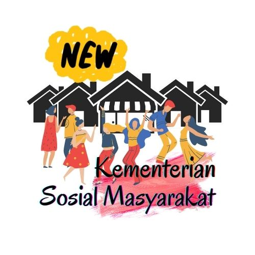
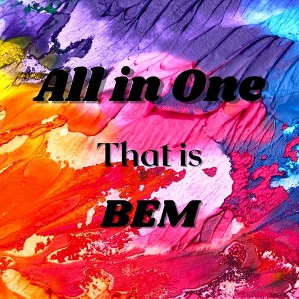

KEMENTERIAN
Sembilan Kementerian yang Ada di BEM PDFKU Polinema Kediri.
-

Kementerian Agama
(Kemenag)
Kementerian Agama merupakan kementerian yang menjembatani kegiatan-kegiatan keagamaan, baik muslim maupun non muslim yang ada di PSDKU Polinema di Kota Kediri. Kementerian agama juga menaungi beberapa perkumpulan yaitu persekutuan do'a dan divisi agama islam.
-

Kementerian Dalam Negeri
(Kemendagri)
Kementerian Dalam Negeri adalah Kementerian yang berfokus ke internal kampus mulai dari membentuk koordinasi dengan para OKI sampai melakukan kajian isu-isu internal kampus. Program Kerja dan Agenda Kemendagri antara lain Expo Kelembagaan, Dies Natalies, Pemira, Kuartal OKI dll.
-

Kementerian Keuangan
(Kemenkeu)
Kementerian Keuangan BEM PSDKU Politeknik Negeri Malang di Kota Kediri adalah fungsionaris BEM PSDKU Politeknik Negeri Malang di Kota Kediri yang bertanggungjawab dalam masalah manajemen keuangan organisasi. Program kerja Kemenkeu antara lain Paid promote,Danus,Sponsorship.
-

Kementerian Kesejahteraan Mahasiswa
(Kemenkesma)
Kementerian Kesejahteraan Mahasiswa adalah Kemeneterian yang melakukan advokasi, memberikan informasi, serta menindaklanjuti aspirasi mahasiswa terkait akademik maupun non akademik, administrasi, dan fasilitas umum demi kesejahteraan mahasiswa PSDKU Politeknik Negeri Malang di Kota Kediri. Program Kerja dan Agenda terkait antara laim Dipam, SKKM, Kotak Aspirasi dll
-

Kementerian Komunikasi dan Informasi
(Kominfo)
Kementerian Komunikasi dan Informasi adalah Kementerian yang melakukan riset, mengedit, serta mempublikasikan informasi mengenai lingkup internal maupun eksternal secara akurat di media sosial. Program kerja dan agenda dari kementerian kominfo antara lain Podcast, Pembuatan Video Profil BEM, Desain Intern dll.
-

Kementerian Luar Negeri
(Kemenlugri)
Kementerian Luar Negeri adalah kementerian yang berfokus langsung ke eksternal kampus, dengan kata lain sebagai jembatan BEM untuk berkomunikasi dengan kampus lain maupun organisasi lain diluar kampus. Program Kerja dan Agenda Kemenlugri antara lain Ikatan Alumni BEM, Study Banding, Webinar dll.
-

Kementerian Pengembangan Sumber Daya Mahasiswa
(PSDM)
Kementerian PSDM merupakan salah satu kementerian yang ada di BEM PSDKU POLINEMA di KOTA KEDIRI yang memiliki tugas dan wewenang kaderisasi dan pengembangan di lingkungan PSDKU POLINEMA di KOTA KEDIRI , program kerja dan agenda kementerian PSDM Antara lain Pekan Olahraga mahasiswa & pekan Seni mahasiswa, Open Recruitment BEM,LKMM TM & LKMM TD, Webinar.
-

Kementerian Sekretaris Kabinet
(Kemensekab)
Kementerian Sekretaris Kabinet Merupakan kementerian yang menjadi sentral administrasi di BEM. Melakukan koordinasi, sinkronasi serta pengedalian urusan administasi pada OKI. Selain itu juga mengatur kesekretariatan baik dalam segi pengadaan, perencanaan, penggunaan, dan bertanggung jawab atas inventaris bem.
-

Kementerian Sosial Masyarakat
(Kemensosma)
Kementerian Sosial Masyarakat merupakan kementerian yang bergerak sebagai pusat integrasi dalam menyalurkan pergerakan kepedulian sosial serta sebagai wadah mahasiswa dalam menerapkan Tri Dharma Perguruan Tinggi. Program Kerja Kementerian Sosial Masyarakat antara lain Bina Desa, Sekolah Mengajar, Taman Baca, Galang Dana, dll.
-
